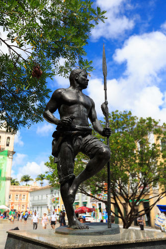
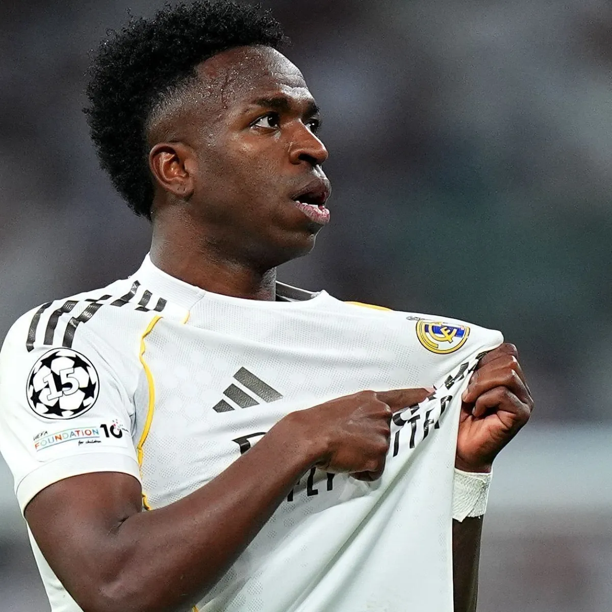

A Consciência Negra é um momento de reflexão sobre a história, a cultura e a contribuição da população negra para a formação da sociedade brasileira. Celebrada em 20 de novembro, essa data representa a luta contra o racismo, a desigualdade e a discriminação, além de valorizar a identidade, a resistência e as conquistas do povo negro.
A importância da Consciência Negra está em reconhecer as injustiças sofridas pelos negros ao longo da história, principalmente durante o período da escravidão, e compreender que todos devem ter os mesmos direitos e oportunidades, independentemente da cor da pele.
O respeito é fundamental para construir uma sociedade mais justa. Respeitar significa tratar todas as pessoas com igualdade, sem preconceito, discriminação ou atitudes racistas. Cada pessoa merece ser valorizada por sua história, cultura, personalidade e capacidades.
Combater o racismo é uma responsabilidade de todos. Pequenas atitudes, como não aceitar comentários preconceituosos, respeitar as diferenças e valorizar a cultura afro-brasileira, ajudam a transformar a sociedade.
A Consciência Negra não deve ser lembrada apenas em novembro, mas todos os dias. O respeito, a igualdade e a valorização das diferenças devem fazer parte da nossa convivência. Afinal, uma sociedade melhor é construída quando todos têm voz, oportunidades e seus direitos respeitados.
A Consciência Negra também representa o reconhecimento da resistência do povo negro, que durante muitos anos lutou contra a escravidão, o preconceito e a falta de direitos. Mesmo diante de tantas dificuldades, homens e mulheres negros contribuíram para a construção da história, da cultura, da música, da dança, da religião e da identidade brasileira.
Um dos principais símbolos dessa luta é Zumbi dos Palmares, líder do Quilombo dos Palmares. Ele se tornou um símbolo de resistência contra a escravidão e da luta pela liberdade. Sua história nos ensina a importância da coragem, da liberdade e da busca por igualdade.
A cultura afro-brasileira está presente em diferentes partes do nosso cotidiano. Podemos encontrá-la na capoeira, no samba, na culinária, nas manifestações culturais, nas religiões de matriz africana e em diversas expressões artísticas. Conhecer essas tradições é uma forma de valorizar a contribuição da população negra para o Brasil.
Outro ponto importante é a igualdade racial. Ela significa garantir que todas as pessoas tenham os mesmos direitos, oportunidades e condições de desenvolver seus sonhos, sem sofrer discriminação por causa da cor da pele ou da origem.
O racismo ainda é um problema presente na sociedade. Ele pode aparecer por meio de ofensas, exclusão, tratamento desigual e preconceitos. Por isso, é importante aprender a identificar essas atitudes e não permanecer em silêncio diante de situações discriminatórias.
A escola também possui um papel muito importante na luta contra o racismo. Por meio da educação, os estudantes podem conhecer a história da população negra, aprender sobre diferentes culturas e desenvolver atitudes de respeito e valorização das diferenças.
As personalidades negras também possuem grande importância na história e na sociedade. Artistas, atletas, escritores, cientistas e líderes sociais mostram que a população negra está presente em diversas áreas e contribui para o desenvolvimento do país.
Portanto, a Consciência Negra é muito mais do que uma data comemorativa. É um momento de aprendizado, reconhecimento e reflexão sobre a importância da população negra na construção do Brasil. Valorizar essa história significa respeitar o passado, combater as injustiças do presente e construir um futuro com mais igualdade.
O racismo é um problema que ainda está presente em nossa sociedade e afeta milhões de pessoas. Assistir ao vídeo a seguir é uma oportunidade de refletir sobre o preconceito, compreender suas consequências e perceber a importância de respeitar as diferenças. Combater o racismo é uma responsabilidade de todos nós!
Zumbi dos Palmares foi uma das figuras mais importantes da história do Brasil e se tornou um símbolo da resistência negra e da luta pela liberdade. Ele nasceu por volta de 1655 e ficou conhecido por sua atuação na liderança do Quilombo dos Palmares, uma comunidade formada principalmente por pessoas negras que fugiam da escravidão.
O Quilombo dos Palmares ficava na região da atual Serra da Barriga, no estado de Alagoas. Era uma comunidade onde milhares de pessoas viviam, construíam suas famílias, trabalhavam e organizavam formas de resistência contra a escravidão.
Zumbi assumiu a liderança de Palmares e participou da resistência contra as expedições que tentavam destruir o quilombo. Sua história representa a luta de muitas pessoas que não aceitaram viver sem liberdade e dignidade.
Durante sua vida, Zumbi enfrentou diversas dificuldades para defender Palmares. Em 20 de novembro de 1695, ele foi morto pelas forças que combatiam o quilombo. Sua morte marcou um momento importante da história da resistência negra no Brasil.
Atualmente, Zumbi dos Palmares é lembrado como um símbolo de coragem, resistência e luta contra o racismo. O dia 20 de novembro, data de sua morte, foi escolhido para representar o Dia Nacional de Zumbi e da Consciência Negra.
Conhecer a história de Zumbi é importante porque nos ajuda a compreender o passado do Brasil, reconhecer a resistência da população negra e refletir sobre a necessidade de construir uma sociedade com mais respeito, igualdade e liberdade.

Um símbolo de resistência e liberdade
Esta estátua representa Zumbi dos Palmares, uma das figuras mais importantes da história brasileira. Sua imagem simboliza a coragem, a resistência e a luta do povo negro contra a escravidão. A lança representa a defesa de sua comunidade e a resistência contra aqueles que tentavam destruir o Quilombo dos Palmares. Até hoje, Zumbi é lembrado como um símbolo de liberdade, igualdade e combate ao racismo. Sua história continua inspirando gerações a lutar por uma sociedade com mais respeito e justiça.
Vinícius José Paixão de Oliveira Júnior, conhecido mundialmente como Vini Jr., nasceu em 12 de julho de 2000, em São Gonçalo, no Rio de Janeiro. Ele é um jogador brasileiro que conquistou reconhecimento internacional por seu talento no futebol, atuando pelo Real Madrid e pela Seleção Brasileira.
Além de sua carreira no esporte, Vinícius Júnior ficou conhecido por sua luta contra o racismo. Durante sua trajetória na Espanha, sofreu diversos episódios de insultos e manifestações racistas em estádios de futebol. Mesmo diante dessas situações, passou a utilizar sua visibilidade para denunciar o preconceito e exigir respeito.
Um dos episódios mais conhecidos aconteceu em maio de 2023, durante uma partida entre Real Madrid e Valencia. Vinícius foi alvo de ofensas racistas vindas das arquibancadas. O caso ganhou repercussão internacional e aumentou o debate sobre o racismo no futebol.
Em 2024, três torcedores foram condenados a oito meses de prisão por insultos racistas direcionados ao jogador durante uma partida na Espanha. Essa decisão representou um marco no combate ao racismo nos estádios espanhóis.
Vinícius também participa de campanhas de conscientização e utiliza sua influência para incentivar a educação e o respeito. Por meio do Instituto Vini Jr., apoia iniciativas que unem educação, esporte e inclusão social.
Sua importância na luta contra o racismo: Vini Jr. mostra que o racismo não deve ser ignorado ou tratado como uma brincadeira. Sua trajetória ajuda a chamar a atenção para a discriminação racial e reforça a importância de combater o preconceito dentro e fora dos campos.
Vinícius Júnior representa uma geração que não aceita o preconceito em silêncio. Sua história demonstra que o esporte também pode ser uma ferramenta de transformação social e que a luta contra o racismo é responsabilidade de todos.
Uma luta que vai além do futebol! Neste vídeo, podemos conhecer um pouco mais sobre a luta de Vinícius Júnior contra o racismo. Sua história mostra que o preconceito não deve ser aceito em nenhum ambiente e que todos merecem respeito, independentemente da cor da pele. Sua atitude inspira pessoas do mundo inteiro a combater a discriminação e defender a igualdade.
Vinícius José Paixão de Oliveira Júnior, conhecido como Vini Jr., nasceu em 12 de julho de 2000, em São Gonçalo, no Rio de Janeiro. Desde pequeno, demonstrava paixão pelo futebol e sonhava em se tornar um grande jogador. Começou sua trajetória nas categorias de base do Flamengo e, ainda muito jovem, chamou a atenção do futebol internacional. Em 2018, passou a jogar pelo Real Madrid, um dos clubes mais conhecidos do mundo.
Mesmo conquistando espaço e reconhecimento no futebol, Vini Jr. precisou enfrentar situações de racismo durante partidas na Espanha. Em vez de ficar em silêncio, passou a denunciar essas atitudes e defender que o preconceito seja combatido. Sua luta mostra que o racismo não deve ser tratado como brincadeira ou algo normal, mas como um problema sério que precisa de atenção e punição.
Além de sua carreira nos gramados, Vinícius também criou o Instituto Vini Jr., que desenvolve projetos educacionais para crianças e utiliza o futebol como ferramenta de aprendizagem. A iniciativa busca contribuir para uma educação mais inclusiva e para a construção de uma sociedade com mais oportunidades.
Sua história representa coragem, superação e resistência. Vini Jr. mostra que o esporte pode ser muito mais do que competição: pode ser uma forma de dar visibilidade a causas importantes e incentivar outras pessoas a combaterem o preconceito.

A Consciência Negra é um momento de reflexão sobre a história, a cultura e a contribuição da população negra para a construção do Brasil. Conhecer histórias de pessoas como Zumbi dos Palmares e Vinícius Júnior nos ajuda a compreender a importância da resistência e da luta contra o racismo.
O combate ao preconceito não deve acontecer apenas no dia 20 de novembro, mas todos os dias. É necessário respeitar as diferenças, valorizar a cultura afro-brasileira e garantir que todas as pessoas tenham os mesmos direitos e oportunidades.
Consciência Negra é reconhecer o passado, valorizar o presente e construir um futuro com respeito, igualdade e liberdade